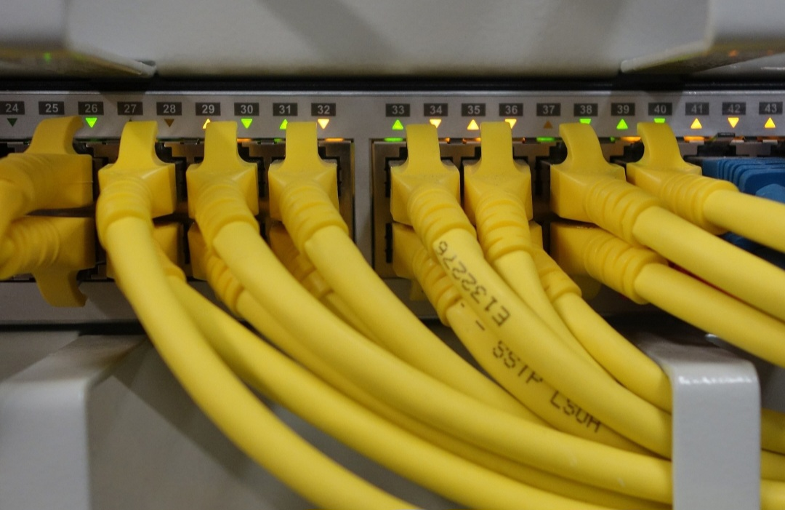
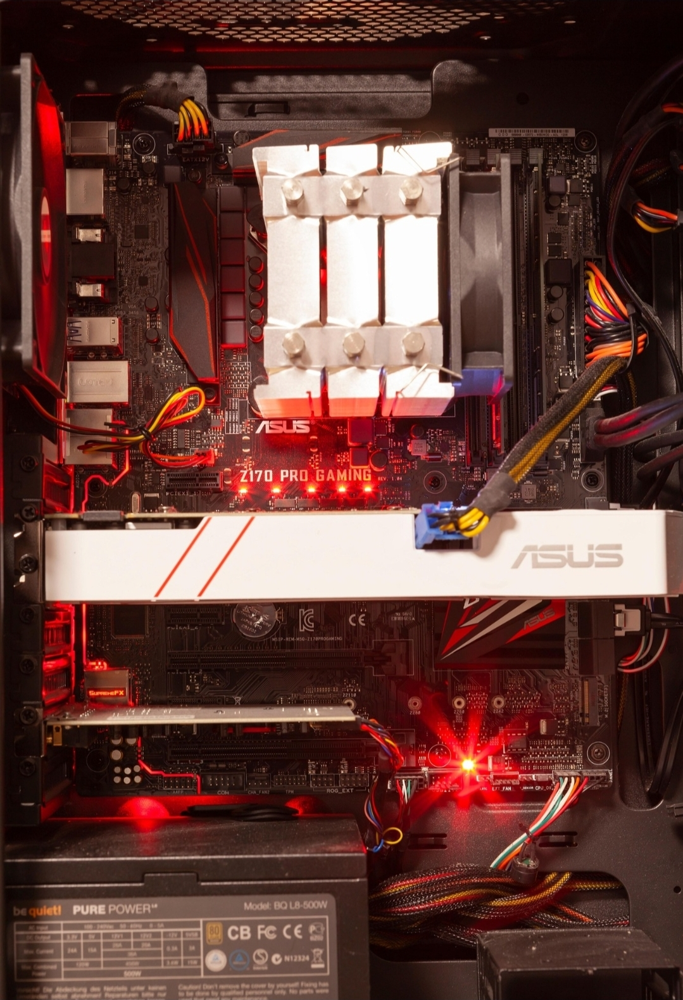
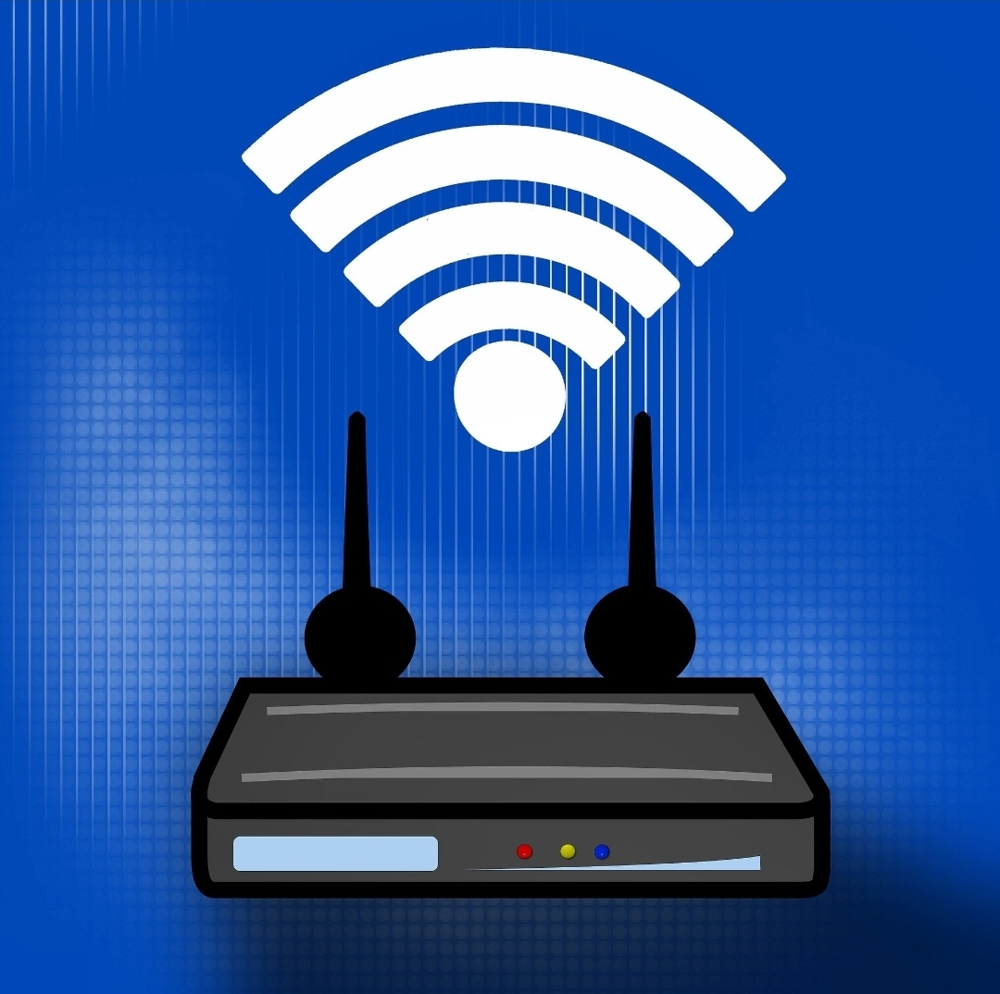

Samuel Diazgranados Gómez

Los dispositivos de red son elementos fundamentales para la comunicación entre computadoras y otros equipos dentro de una red. Entre los más importantes se encuentran el router, el switch y el hub. Estos dispositivos permiten la transmisión de datos, el acceso a internet y la conexión entre múltiples usuarios. Comprender su funcionamiento es clave para el manejo de redes tanto en el hogar como en entornos empresariales.
El router es un dispositivo que se encarga de conectar diferentes redes entre sí, como una red local con internet. Su función principal es dirigir los paquetes de datos hacia su destino correcto utilizando direcciones IP. Además, permite compartir la conexión a internet entre varios dispositivos.
El switch conecta varios dispositivos dentro de una misma red local. A diferencia del hub, el switch envía la información únicamente al dispositivo destinatario, lo que mejora la eficiencia y reduce el tráfico innecesario.
El hub es un dispositivo más básico que conecta varios equipos en una red. Envía la información a todos los dispositivos conectados sin discriminar, lo que puede generar congestión en la red.
| Dispositivo | Función | Eficiencia |
|---|---|---|
| Router | Conecta redes diferentes | Alta |
| Switch | Conecta dispositivos en red local | Media-Alta |
| Hub | Distribuye datos a todos | Baja |

En una casa, el router permite conectar dispositivos como celulares, computadores y televisores al internet. En una empresa, los switches se utilizan para conectar múltiples equipos en una misma red local de forma eficiente. Aunque los hubs están en desuso, pueden encontrarse en redes antiguas donde no se requiere alta eficiencia.

Los dispositivos de red son esenciales para el funcionamiento de cualquier sistema de comunicación digital. El router, el switch y el hub cumplen funciones diferentes, pero complementarias. Mientras el router conecta redes, el switch optimiza la comunicación interna y el hub representa una tecnología básica. Conocer sus características permite diseñar redes más eficientes y seguras.